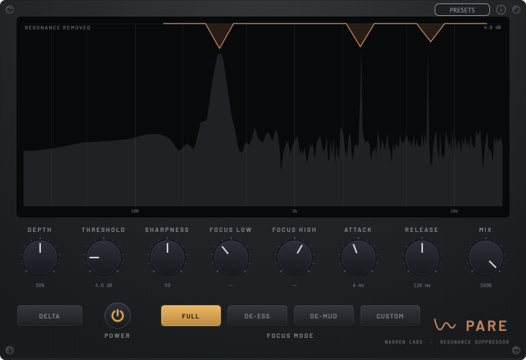
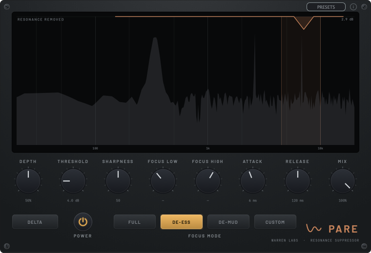
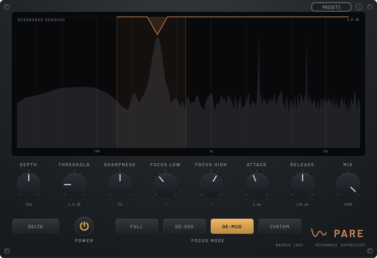
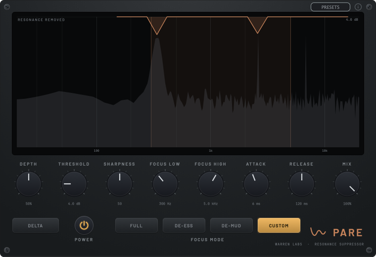

Trueness lineDynamic resonance suppressor + de-esserBeta
Pare
Tame what rings, leave the rest.




A dense dynamic filterbank that cuts resonant bands only where and when they spike. Transparent when nothing's ringing, minimum-phase, no pre-ringing. A focus mode scopes the same engine to sibilance or low-mid mud, so one tool covers resonance, de-essing and de-mudding. A delta monitor shows exactly what's removed.
- Per-band resonance detection
- Focus modes: Full Range / De-ess / De-mud / Custom
- Transparent at rest
- Delta (listen to what's removed)
- VST3 / AU / Standalone
Part of The Reference Desk · $49
See The Reference Desk →